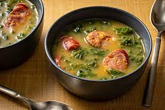

Caldo Verde

Ingredients
- Potatoes
- Vegetable Oil
- Bacon
- Kale
- Pepperoni Sausage
- Water
- Chicken Broath
Steps
- Boil the potatoes until they're mushy. Boil them in the water, broath, salt and oil
- Blend the potatoes on a food processor or blender
- Pan fry the bacon and sausage. Remember the bacon takes longer to fry
- Add the potate blend into the pan and mix
- Add the kale and mix until the mixture turns green
- ENJOY!